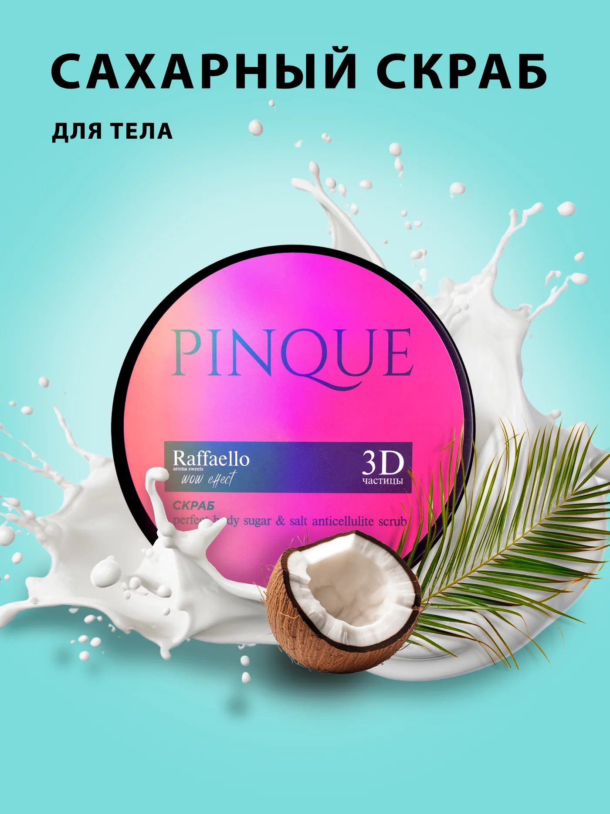
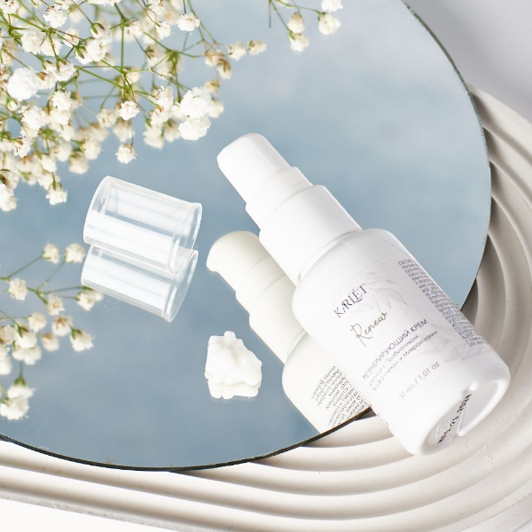
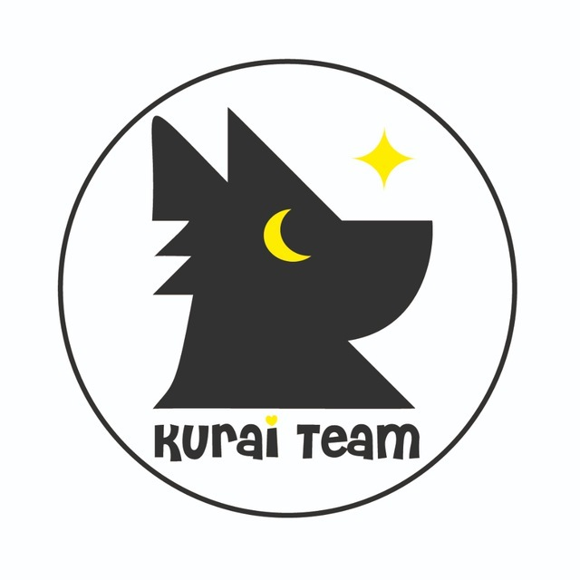
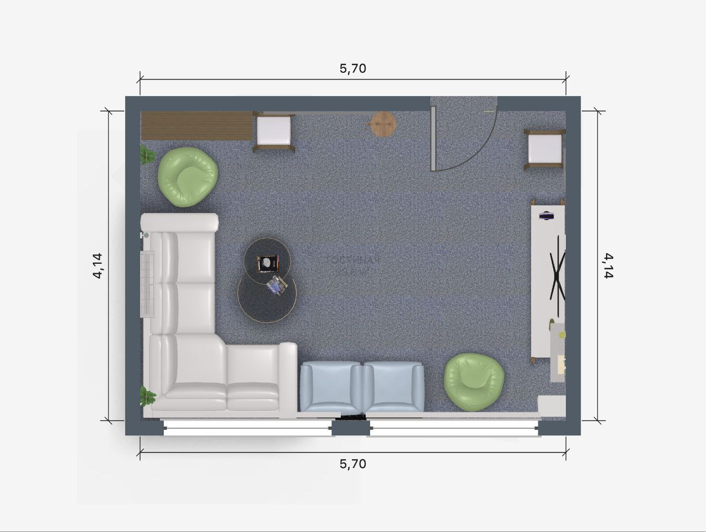

Pinque · 2024
Pinque
Серия карточек для линейки сахарного скраба Pinque: яркая обложка, продуктовые офферы и слайды с ингредиентами в единой визуальной системе.
Сейчас сайт переходит от одной стартовой страницы к нормальной структуре с разделами, подразделами и отдельными кейсами. Уже работает первый полноценный пример: раздел, листинг и отдельная страница кейса.
Главная теперь ведет не на якоря внутри одной страницы, а в реальную структуру сайта. Ниже пока показан первый живой раздел из новой модели.
Один проект уже проходит всю новую цепочку: curated media, content entry, section listing и отдельная case page.

Pinque · 2024
Серия карточек для линейки сахарного скраба Pinque: яркая обложка, продуктовые офферы и слайды с ингредиентами в единой визуальной системе.
Эта часть пока сохраняет формат стартовой страницы и служит визуальным входом в портфолио, пока новые кейсы поэтапно переносятся в content layer.



Новый слой уже умеет собирать разделы и кейсы из отдельных данных и web-ready медиа. Следующий шаг — расширить эту структуру на остальные реальные работы.
Главная уже работает как входная страница для новой системы и показывает, как дальше будут подключаться разделы, кейсы и медиа.
Разделы, подразделы и кейсы больше не должны жить в одном монолитном шаблоне. Они описываются отдельно и затем собираются в страницы.
Для сайта используются не случайные файлы из intake-архива, а подготовленные web-ready ассеты, которые копируются в итоговый build.
Большие проекты получают свою страницу кейса, а мелкие работы остаются в листингах. Это позволяет не смешивать крупные бренды в одну витрину.